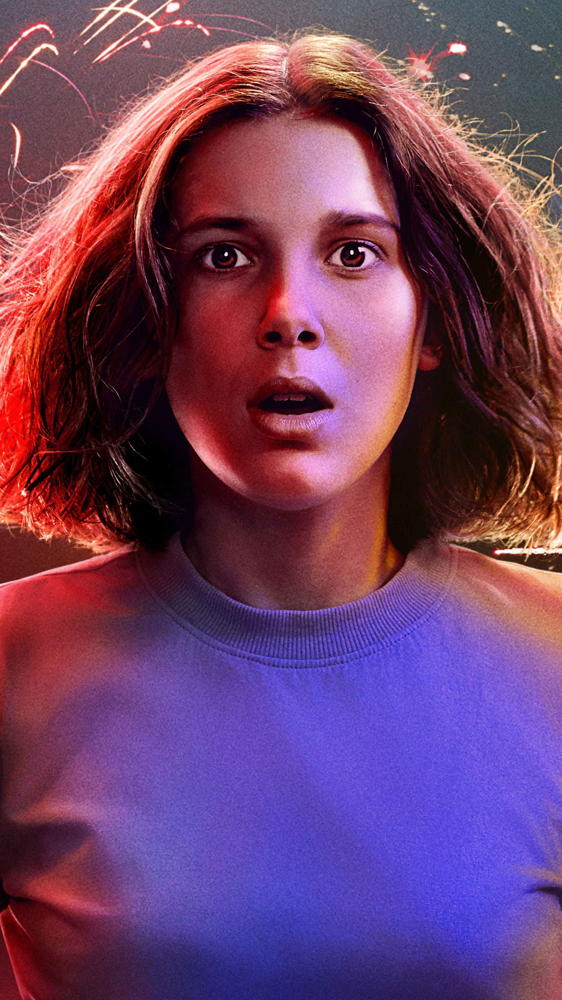

Eleven
Eleven foi treinada pelo governo no Laboratório Nacional de Hawkins. Ela foi nomeada de Eleven e ganhou a tatuagem "011" no seu braço para mostrar sua posição como uma cobaia de testes.
Através de testes, os cientistas queriam descobrir e melhorar a extensão de suas habilidades psíquicas. Ela foi cobaia de pelo menos quatro experimentos. O primeiro foi esmagar uma lata com telequinesia; Que foi um sucesso, embora seu nariz começou a sangrar.
Eleven |
|
| Aparencia: | Onze que no caso não tinha cabelo na primeira temporada passa a ter na segunda cabelos encaracolados ainda em fase de crescimento. Na terceira, eles já estão quase chegando aos seus ombros. |
| Personalidade: | No começo, Eleven nunca teve interação com o mundo exterior, por isso possui uma personalidade grossa e silenciosa |
| Relacionamentos: | Jim Hopper - Pai adotivo / Joyce Byers - mãe adotiva / Dustin Henderson - amigo / Mike Wheeler - namorado / Lucas Sinclair - amigo / Will Byers - amigo |
| Habilidades e Equipamentos | Onze possui superpoderes psicocinéticos, podendo fazer levitar objetos com sua mente, além se comunicar com as pessoas através da mente. |